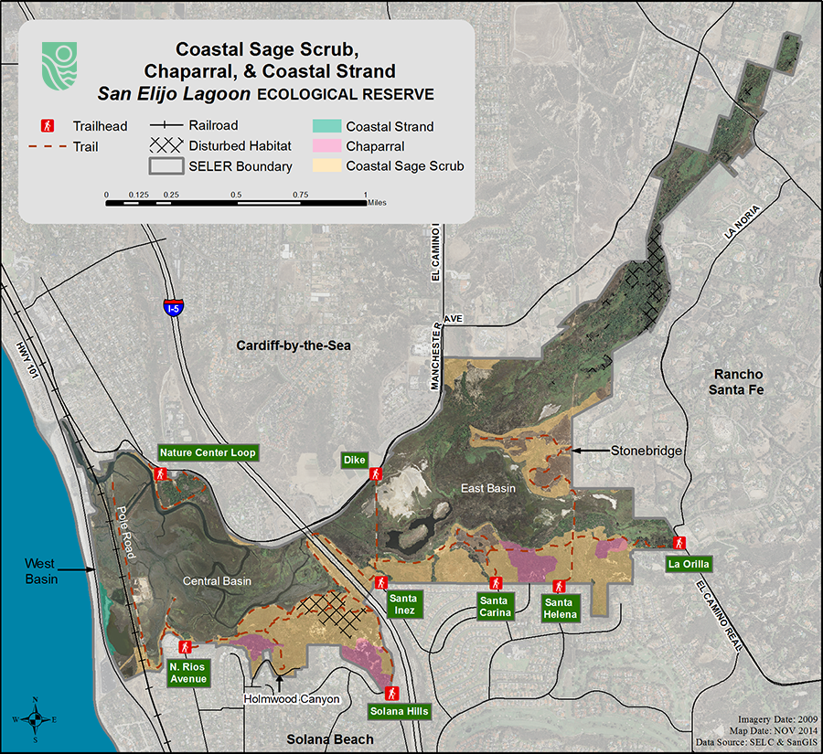
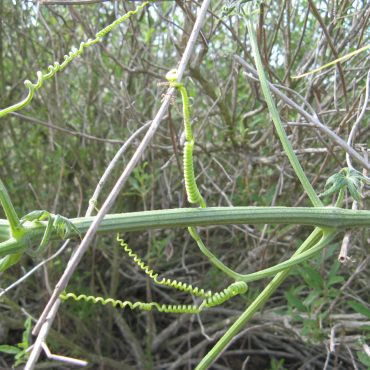
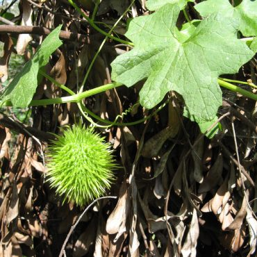
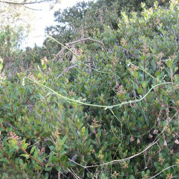
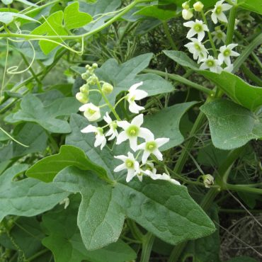
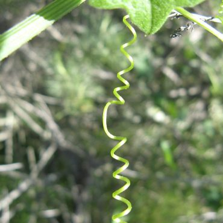
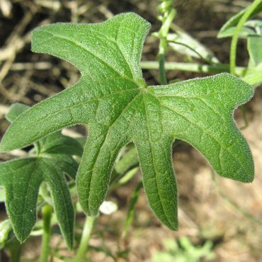

Распределение
Дикий огурец родом из Калифорнии. Он встречается в центральной и южной Калифорнии и имеет ограниченное распространение за пределами штата. Он распространен среди чапараля, а также встречается в прибрежных зарослях шалфея, прибрежных полосах и дубовых лесах на высоте 5000 футов (1800 м). Дикий огурец можно найти вдоль троп на южной стороне заповедника. Рядом с началом тропы в Риосе растет несколько крупных лиан, а знак к востоку от этой тропы указывает на клубень, вырастающий из земли под лимонной ягодой ( Rhus integrifolia ). Растения наиболее заметны в период с декабря по май.
Классификация
Дикий огурец — двудольное покрытосеменное растение семейства тыквенных Cucurbitaceae. Многие представители этого семейства являются вьющимися лозами с клубневыми подвоями. Цветки обычно состоят из пяти частей (4-6 в Марах ), радиально-симметричные с соединенными или частично соединенными лепестками, белого или желтого цвета. Мужские и женские цветки разные, обычно образуются на одном растении (растение «однодомное»). Завязь прикрепляется ниже цветка (завязь «нижняя»). Плоды часто бывают мясистыми и похожими на дыню с кожурой и губчатой внутренностью или древесными и похожими на тыкву. Семейство тыквенных содержит основные пищевые растения, такие как огурцы, дыни и кабачки. Эти плоды были одними из первых культивируемых растений как в Старом, так и в Новом Свете. В прошлом систематики различали несколько разновидностей дикого огурца. О нашем растении изначально сообщалось как о разновидности макрокарпа . 48 В настоящее время эти более ранние разновидности более не считаются действительными. 2 , 7 Еще один вид этого семейства был зарегистрирован в заповеднике – дикая тыква ( Cucurbita foetidissima )
Альтернативные научные названия:
Марах макрокарпус, Вар макрокарпус, Марах гуадолупенсис
  Экология
Дикий огурец с его большим подземным клубнем — одно из первых растений, которое прорастает после пожара. 14 , 23 Он энергично пересевает в первый год после пожара, и нередко можно увидеть ковры из дикого огурца в течение первого послепожарного сезона. 70 Дикие огурцы поднимаются с помощью длинных усиков от своих листовых осей. 139 Усики прямые, пока не достигают ветки или другой опоры, после чего кончик усика быстро обвивается вокруг опоры, закрепляя лозу. 390Впоследствии весь усик скручивается между растением и его опорой. Дарвин обнаружил парадокс скручивания усика, закрепленного на обоих концах, и разрешил дилемму, заметив, что усик скручивается в противоположном направлении с любого конца. Рядом с серединой каждого скрученного усика находится плоское место, где витки меняют направление. Это плоское пятно называется «извращением». На катушке может быть более одного извращения. Скручивание усика укорачивает усик, приближая растение огурца к его опоре, а также обеспечивая отличную пружину между ними.
  